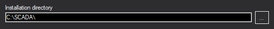

Figura 1. Componentes de Windows 7 .NET
Rapid SCADA requiere la instalación de ciertos componentes de Windows. Vaya a Control Panel > Programs > Turn Windows features on or off (Panel de control> Programas> Activar o desactivar las características de Windows). Los componentes necesarios de Microsoft .NET Framework se muestran en Figuras 1 y 3. Tenga en cuenta que los componentes secundarios de Windows Communication Foundation de Microsoft .NET Framework 3.5 deben estar apagados.
La aplicación Webstation requiere Internet Information Services (IIS), que es una de las características de Windows. La aplicación Webstation no funcionará a menos que se active el conjunto de ciertas características de IIS. Las Figuras 2 y 4 muestran qué características deben instalarse. Durante la configuración de la aplicación Webstation el instalador verifica la disponibilidad de estas características.
Figura 1. Componentes de Windows 7 .NET

Figura 2. Componentes de Windows 7 IIS

Figura 3. Componentes de Windows 10 .NET

Figura 4. Componentes de Windows 10 IIS
Ejecute ScadaSetup.exe desde el paquete de instalación para iniciar la instalación de Rapid SCADA. El instalador se muestra en la Figura 5. La instalación debe realizarse con una cuenta de administrador. Rapid SCADA requiere que esté instalada la versión actualizada de Microsoft .NET Framework. El instalador verifica que el Framework esté presente y sugiere descargarlo e instalarlo si fuera necesario.

Figura 5. Instalador de Rapid SCADA
Antes de comenzar la instalación, se pide al usuario que elija las aplicaciones y el directorio de instalación (vea las Figuras 5 y 6). Este directorio especifica la ubicación de todo el software. El instalador crea los subdirectorios necesarios para las aplicaciones seleccionadas. Se recomienda el directorio predeterminado C:\SCADA debido a que así se simplificará la configuración de las aplicaciones.

Figura 6. Eligiendo el directorio de instalación
Las opciones de instalación de la aplicación web (vea la Figura 7) se deben acordar con el administrador del sistema. Si no hay requisitos específicos para la aplicación web, se deben usar los valores predeterminados.

Figura 7. Opciones de instalación de la aplicación Web
Al completar la instalación, se recomienda verificar que la aplicación Scada web utilice un grupo de aplicaciones que tienen .NET 4.0 runtime version y el modo pipeline integrado. La ruta de la consola de administración de IIS es Control Panel > System and Security > Administrative Tools > Internet Information Services (IIS) Manager (Panel de control> Sistema y seguridad> Herramientas administrativas> Administrador de Internet Information Services (IIS).